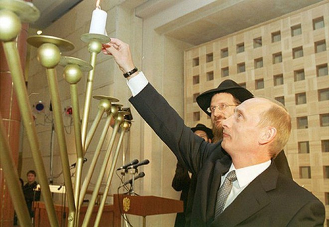

Putin and Plowshares - Part 1
By Prof. Shimon Silman, RYAL Institute and Touro College

It is now 27 years since the Rebbe MH”M announced the beginning of the fulfillment of Isaiah’s prophecy “And they shall beat their swords into plowshares.” The world has certainly changed a lot—for the better. Now admittedly, there are smart, well-meaning people who speak of gloom and doom. No less a personality than Mikhail Gorbachev (yes, he’s still around) wrote an article in Time magazine two years ago explaining that recent events indicated that “the world is preparing for war.” But in our “Swords into Plowshares” article that year we explained that the correct point of view was that of a U.S. Department of Defense scientist who said, “If there is a war it will probably just be a game of chess.” (See Beis Moshiach, Parshas Mishpatim, 5777, “Preparing for War or Playing Chess.”)
A U.S. scholar who is an expert on Russian politics, whom we will quote frequently in this article, Professor Stephen Cohen, also takes a gloomy point of view on this subject. (He also happens to be a long time, close personal friend of Mikhail Gorbachev.) In his new book War with Russia? (Skyhorse Publishing, Sept. 2018), he claims that there is a new cold war with Russia, more dangerous than the first one! But he too is wrong, as we will demonstrate using some of his own arguments.
So, it seems to be all about Russia, and Russia is all about Vladimir Putin, so let’s ask the fundamental question: Who is Vladimir Putin and what does he want?
But first, a little story. There was once a religious Jewish community where, of course, everyone would read the Jewish newspapers and magazines. Everyone, that is, except for one member of the community who would only read the anti-Semitic periodicals. Finally, one day, his friends challenged him on this and asked him, “Look, you are a religious Jew, and all of us, except for you, are reading the Jewish newspapers, while you read the anti-Semitic newspapers! How could this be?”
He replied, “I’ll explain it to you. When I read the Jewish newspapers, I read about all the problems in our Jewish communities—politics, family problems, problems with the youth etc.—as well as all the problems in Israel. I get very depressed.
“But when I read the anti-Semitic newspapers, I read that the Jews have all the money, the Jews are controlling our government and the Jews are running the world—and it makes me very happy!”
A NEW PARADIGM
One’s worldview is based on his information and his information depends on where he goes to get it. It is no secret that in the mainstream media there is very little objective reporting anymore. Most news is agenda driven. Hence—Fake News. But even in scholarly papers and articles, a scientific paper will probably not be published if it does not fit the current scientific paradigms. For example, back in the 1980’s, when String Theory was first proposed as a unifying theory in physics, it was hard to get a paper on it published. A couple of decades later, when the theory was hot, a paper on String Theory would be grabbed up.
Our information comes from nonpolitical sources such as the Human Security Reports, and our paradigm is the Sicha of Parshas Mishpatim, 5752, where the Rebbe MH”M presents the Swords into Plowshares paradigm very clearly and in great detail.
During the Persian Gulf War of 1991, the Rebbe MH”M said repeatedly that Eretz Yisroel was the safest place in the world, while reports coming from Israel indicated a strong possibility of Iraq attacking Israel with chemical weapons. Someone going for dollars one Sunday said to the Rebbe MH”M that he and his family were planning to go to Israel, but they were afraid to go because on the radio they kept warning about chemical weapons. The Rebbe MH”M replied that they should listen to Hashem’s predictions and stop listening to the radio’s predictions.
In fact, Sadam Hussein had ordered his generals that if the U.S. attacked Iraq, they should retaliate by attacking Israel with chemical weapons. The United States did attack, of course, but the generals did not carry out the order. They simply didn’t do it. It was a miracle, literally.
So the radio’s predictions were false, but they were not Fake News. In this case they were just presenting their best information. They had no way of knowing that Hashem was going to perform a miracle. But Melech HaMoshiach knew and he said so. He knew the truth.
The same applies to our present situation. The news reporting may try to be as honest—fair and balanced—as they can, but they are still finite human beings. They have no way of knowing The Truth; only a prophet, a tzaddik—Melech HaMoshiach—can know this. And he said that this is the Era of Swords into Plowshares, with all that goes with it.
MAKING RUSSIA GREAT AGAIN
Our mandate is to monitor the worldwide Swords into Plowshares process as we have been doing for over two decades since the Rebbe MH”M announced its commencement. We expect to see ever decreasing militarization and peaceful relations among the nations of the world. This brings us back to Russia—and to Vladimir Putin.
In our 5777 article, we presented a quantitative measure with which to determine if a nation is becoming demilitarized: The percent of the GDP (Gross Domestic Product) that is spent on weapons. In simpler words: What percent of their total economy is being used to produce weapons? We presented a graph depicting the trend in this percent value for five nations: The U.S., England, France, China and Russia. Why these five? Because the Swords into Plowshares declaration at the U.N. was made by the 15 members of the Security Council. The nations that we chose as indicators are the 5 permanent members on the Security Council. The other 10 positions rotate among various countries. The graph is herein reproduced:
As you can see, all the nations have an overall downward trend in their militarization since 1992 when the SIP declaration was made—all except Russia. So, this brings us back to our original question: What is Russia—Putin—up to?
Who is Vladimir Putin? It makes a difference. If “Putin is an evil man, and he is intent on evil deeds” as the late Senator John McCain has said, then Russia’s increased militarization can be seen as an attempt to step back from their commitment to the Swords into Plowshares agenda. But if all he is trying to do is Make Russia Great Again, then he’s not doing anything nefarious.
John McCain was not the only Putin basher. Hillary Clinton (who may or may not have any expertise on spiritual matters) pointed out that Putin “was a KGB agent. By definition, he doesn’t have a soul.” And here’s John McCain again: “Putin [is] an unreconstructed Russian imperialist and K.G.B. apparatchik…. His world is a brutish, cynical place…. We must prevent the darkness of Mr. Putin’s world from befalling more of humanity.” And in the mainstream media Putin is continuously demonized and blamed for, among other things, Hillary’s loss of the presidential election to Donald Trump. There’s one man who knew what to do when Hillary lost and Trump won. That was David Friedman, now the U.S. ambassador to Israel. The morning after Trump’s election victory, he went down to the Kotel HaMaaravi to thank Hashem for the miracle.
SWORDS INTO PLOWSHARES CONTINUES
Before mentioning Professor Cohen’s views, I’d like to add a personal note. While writing this article I began to wonder what other people think about this matter; you know, the “man on the street.” So I put the question to a WhatsApp group that I belong to: “Who is Vladimir Putin and what does he want?” The answers I got ranged from, “There is absolutely no way to know…,” “לב מלכים ושרים ביד ה” to “?!?!%#*&” (exact text). I also spoke to a colleague of mine, a mathematics professor originally from Kharkov, Ukraine, who gave a rather long answer. His salient points were:
Putin saved Russia after the breakup of the Soviet Union and he deserves a lot of credit for that;
He wants Russia to be respected [i.e., Make Russia Great Again];
He is strong but not dictatorial;
Even in the conflict between Russia and Ukraine my colleague from Kharkov did not fault Putin. He noted that in any conflict, “Western media always sides with the weaker party;”
Now, Professor Cohen has written a whole book on this topic, and with Hashem’s help we will explore the topic further in Part 2 of this article. But we will start off here mentioning 3 major points that Cohen makes at the beginning of his book:
Putin wanted a friendly relationship with the West, but the U.S. and Western Europe treated Russia like a defeated nation, now a second-rate power. His military adventurism in Europe was a reaction to this.
“Putin is not the absolute dictator some have pictured him [as]. His power seems to be based on balancing various patronage networks, some of which are still criminal… He cannot admit publicly that criminal acts happened without his approval since this would indicate that he is not completely in charge.”
“Not a trace of anti-Semitism is evident in Putin.”
For me personally, this last point has been the strongest indicator that Putin is OK. Throughout the history of Europe and the Middle East, almost every absolute ruler with an evil agenda was an anti-Semite. Putin is not an anti-Semite. Ergo, he has a soul.
(Swords into Plowshares continues.)
Beis Moshiach (staff). "Putin and Plowshares - Part 1." Beis Moshiach, no. 1152 (January 31, 2019).